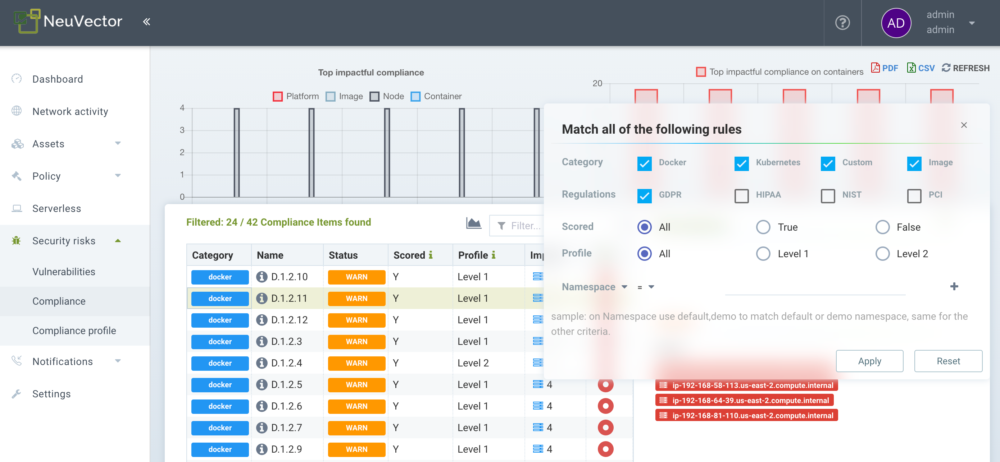
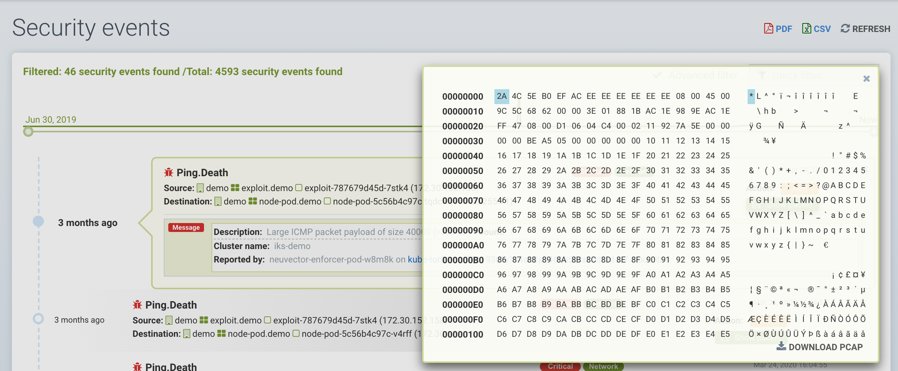

报告与通知
报告
可以从SUSE® Security控制台的多个菜单中查看和下载报告。仪表板显示安全摘要，可以下载为pdf格式。如果需要，pdf下载可以按名称空间进行过滤。

注册中心、容器、节点和平台的漏洞扫描及 CIS 基准结果，也可从资产菜单中各自相应的子菜单中下载为 CSV 文件。
安全风险菜单提供漏洞和合规检查的高级关联、过滤和报告功能。过滤后的视图可以导出为CSV或PDF格式。

PCI、HIPAA、GDPR及其他法规的合规报告可以通过在安全风险→合规中的高级过滤弹出窗口中选择法规进行过滤、查看和导出。

SIEM 和 SYSLOG
您可以在设置 → 配置菜单中的 SUSE® Security 控制台中配置 SYSLOG 服务器和 webhook 通知。选择日志级别、TCP 或 UDP，以及如果需要 json 的格式。CVE 数据可以单独发送给每个 CVE 和/或包含分层扫描结果。您还可以选择将事件发送到控制器的 pod 日志，而不是或附加到 SYSLOG。请注意，事件仅发送到主控制器的 pod 日志。
然后，您可以使用您喜欢的报告工具来监控 SUSE® Security 事件。
此外，您可以通过 CLI 配置您的 SYSLOG 服务器，如下所示：
> set system syslog_server <ip>[:port]REST API 也可以用于配置。
示例 SYSLOG 输出
网络违规
2020-01-24T21:39:34Z neuvector-controller-pod-575f94dccf-rccmt /usr/local/bin/controller 12 neuvector - notification=violation,level=Warning,reported_timestamp=1579901965,reported_at=2020-01-24T21:39:25Z,cluster_name=cluster.local,client_id=edf1c28d3411a9686e6e0374a9325b6a3626619938d3cf435a9d90075a1ef653,client_name=k8s_POD_node-pod-7c57bdbf5d-dxkn4_default_cdd9cf23-488d-439c-9408-ed98f838c67b_0,client_domain=default,client_image=k8s.gcr.io/pause:3.1,client_service=node-pod.default,server_id=external,server_name=external,server_port=80,ip_proto=6,applications=[HTTP],servers=[],sessions=1,policy_action=violate,policy_id=0,client_ip=192.168.35.69,server_ip=172.217.5.110进程违规
2020-01-24T21:39:29Z neuvector-controller-pod-575f94dccf-rccmt /usr/local/bin/controller 12 neuvector - notification=incident,name=Process.Profile.Violation,level=Warning,reported_timestamp=1579901965,reported_at=2020-01-24T21:39:25Z,cluster_name=cluster.local,host_id=k43:HF45:AJC6:5RYO:O5OA:KACD:KRT2:M3O6:P3VQ:IC4I:FSRD:P3HJ:ETLS,host_name=k43,enforcer_id=90822bad25eea14180c0942bf30197528bdab8c8237f307cc3059e6bbdb91f7a,enforcer_name=k8s_neuvector-enforcer-pod_neuvector-enforcer-pod-cg8jp_neuvector_d4ef187e-041c-4bc2-9cdc-c563a3feac6c_0,workload_id=d1be6d14f1f2782029d0944040ea8c0ba581991de99df86041205e15abc80209,workload_name=k8s_node-pod_node-pod-7c57bdbf5d-dxkn4_default_cdd9cf23-488d-439c-9408-ed98f838c67b_0,workload_domain=default,workload_image=nvbeta/node:latest,workload_service=node-pod.default,proc_name=curl,proc_path=/usr/bin/curl,proc_cmd=curl google.com,proc_effective_uid=1000,proc_effective_user=neuvector,client_ip=,server_ip=,client_port=0,server_port=0,server_conn_port=0,ether_type=0,ip_proto=0,conn_ingress=false,proc_parent_name=docker-runc,proc_parent_path=/usr/bin/docker-runc,action=violate,group=nv.node-pod.default,aggregation_from=1579901965,count=1,message=Process profile violation入场控制
2020-01-24T21:48:31Z neuvector-controller-pod-575f94dccf-rccmt /usr/local/bin/controller 12 neuvector - notification=audit,name=Admission.Control.Violation,level=Warning,reported_timestamp=1579902506,reported_at=2020-01-24T21:48:26Z,cluster_name=cluster.local,host_id=,host_name=,enforcer_id=,enforcer_name=,workload_domain=default,workload_image=nvbeta/swarm_nginx,base_os=,high_vul_cnt=0,medium_vul_cnt=0,cvedb_version=,message=Creation of Kubernetes ReplicaSet resource (nginx-pod-695cd4b87b) violates Admission Control deny rule id 1000 but is allowed in monitor mode [Notice: the requested image(s) are not scanned: nvbeta/swarm_nginx],user=kubernetes-admin,error=,aggregation_from=1579902506,count=1,platform=,platform_version=捕获 SYSLOG 输出：
nc -l -p 8514 -o syslog-dump.hex | tee syslog-messages.txt在屏幕上捕获消息，将其记录到文件并记录十六进制转储。
通知和日志
在SUSE® Security控制台的通知菜单中，您可以找到安全事件、风险（扫描与合规）事件和一般系统事件的通知。
通知可以从通知菜单下载为CSV或PDF格式。此外，网络攻击的包捕获可以下载，每个扫描结果的漏洞结果也可从通知→风险报告菜单中下载。
您还可以使用CLI或REST API显示日志。
安全事件
违规是违反白名单规则或匹配黑名单规则的连接。网络违规会被捕获，源IP可以进一步调查。白名单网络违规事件显示为“隐式拒绝规则被违反”，以指示网络连接未匹配任何白名单规则。

在此视图中，您可以查看网络、进程和文件事件，并通过单击“审核规则”按钮轻松添加白名单规则以处理误报。高级过滤器使您能够选择要显示的事件类型。

SUSE® Security还会持续监控所有容器，检测诸如DNS、DDoS、HTTP走私、隧道等已知攻击。当检测到攻击时，会在此记录并阻止（如果容器/服务设置为保护），并自动捕获数据包。您可以查看数据包详细信息，例如：


高级过滤器
通过选择每种一般类型或输入关键字，创建一个高级过滤器以查看或导出事件。
-
Network（网络）。网络事件，例如违规（隐式拒绝规则）、威胁。
-
进程。检测到的进程白名单违规或可疑进程，例如 NMAP、SSH 等。
-
软件包。在容器中更新或安装了一个软件包，因此生成了一个安全事件。
-
隧道。检测到隧道违规。隧道传输，通常采用 DNS 隧道来窃取数据。此检测是通过观察隧道进程启动并将其与 DNS 协议的网络活动关联来完成的。请参见下面的示例事件。 碘隧道的描述 https://github.com/yarrick/iodine
-
文件。文件访问违规。监控的敏感文件/目录已被访问（请参见默认监控列表），或触发了自定义文件监控规则。有关更多信息，请参阅 文件访问规则 页面。
-
特权。在容器或主机中检测到特权升级。特权升级可以通过多种方式进行，并且并非 100% 可检测，因此这是一个难以测试的条件。
其他集成
SUSE® Security已在 SUSE® Security GitHub 账户 https://github.com/neuvector/prometheus-exporter 上发布了一个带有 Grafana 仪表板的 Prometheus 导出器，该导出器可以针对每个安装进行自定义。 此外，Fluentd 的示例集成也可以根据请求提供。
可以通过在“设置”→ 配置中配置 Webhook 端点来发送 Webhook 警报。然后在策略 → 响应规则菜单中创建适当的响应规则，以选择事件类型，并将 Webhook 作为操作。